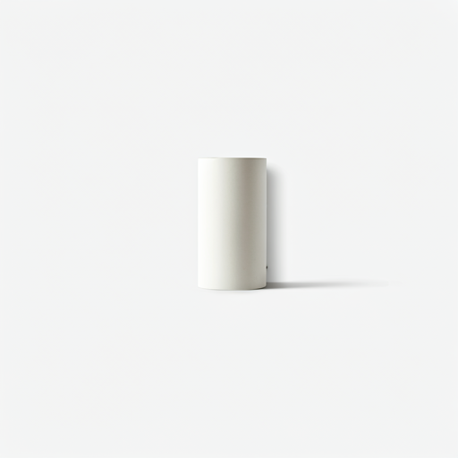

Clinical Series 02
Precision
Dermatology
PHASE 4 CLINICAL VALIDATION
biotech
Diagnostic Tool
Advanced Skin Analysis
Our AI-driven algorithm maps 14 key biomarkers to curate your specific clinical regimen.
Science-Backed Results
Evidence-based transformations measured via high-frequency ultrasound and corneometry.
98%
Cell Regeneration
-42%
Melanin Density
Active Elements
Full IndexThe Clinical Protocol
01
Macro-Analysis
Multi-spectral imaging to detect sub-dermal imperfections invisible to the human eye.
02
Personalized Synthesis
Compounding active ingredients in our sterile lab based on your unique bio-markers.
03
Controlled Evolution
Continuous monitoring and regimen adjustment every 28-day cellular cycle.
Clinical Case #402

Day 00
Day 45
"Measured 67% reduction in inflammatory markers following the DermaScience Synthesis protocol." — Clinical Observer